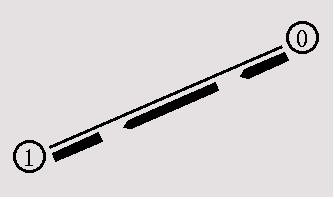

[Previous section] [Next section] [Back to the index]
In this section, you are going to develop a Tcl script for ns which simulates a simple topology. You are going to learn how to set up nodes and links, how to send data from one node to another, how to monitor a queue and how to start nam from your simulation script to visualize your simulation.
IV.1. How to start
Now we are going to write a 'template' that you can use for
all of the first Tcl scripts. You can write your Tcl scripts in
any text editor like joe or emacs. I suggest that you call this
first example 'example1.tcl'.
First of all, you need to create a simulator object. This is done with the command
|
Now we open a file for writing that is going to be used for the nam trace data.
|
The next step is to add a 'finish' procedure that closes the trace file and starts nam.
|
The next line tells the simulator object to execute the 'finish' procedure after 5.0 seconds of simulation time.
|
The last line finally starts the simulation.
|
You can actually save the file now and try to run it with 'ns example1.tcl'. You are going to get an error message like 'nam: empty trace file out.nam' though, because until now we haven't defined any objects (nodes, links, etc.) or events. We are going to define the objects in section 2 and the events in section 3.
You will have to use the code from this section as starting point in the other sections. You can download it here.
IV.2. Two nodes, one link
In this section we are going to define a very simple topology with two
nodes that are connected by a link. The following two lines define
the two nodes. (Note: You have to insert the code in this section
before the line '$ns run', or even better, before the
line '$ns at 5.0 "finish"').
|
The next line connects the two nodes.
|
Now you can save your file and start the script with 'ns example1.tcl'. nam will be started automatically and you should see an output that resembles the picture below.
You can download the complete example here if it doesn't work for you and you think you might have made a mistake.
IV.3 Sending data
Of course, this example isn't very satisfying yet, since you can only look at
the topology, but nothing actually happens, so the next step is to send
some data from node n0 to node n1. In ns, data is always being sent from one
'agent' to another. So the next step is to create an agent object that sends
data from node n0, and another agent object that receives the data on node
n1.
|
These lines create a UDP agent and attach it to the node n0, then attach a CBR
traffic generatot to the UDP agent. CBR stands for
'constant bit rate'. Line 7 and 8 should be self-explaining.
The packetSize is being set to 500 bytes and a packet will be sent every
0.005 seconds (i.e. 200 packets per second). You can find the relevant
parameters for each agent type in the
ns manual page
The next lines create a Null agent which acts as traffic sink and attach it to node n1.
|
Now the two agents have to be connected with each other.
|
And now we have to tell the CBR agent when to send data and when to stop sending. Note: It's probably best to put the following lines just before the line '$ns at 5.0 "finish"'.
|
Now you can save the file and start the simulation again. When you click on the 'play' button in the nam window, you will see that after 0.5 simulation seconds, node 0 starts sending data packets to node 1. You might want to slow nam down then with the 'Step' slider.

I suggest that now you start some experiments with nam and the Tcl script. You can click on any packet in the nam window to monitor it, and you can also click directly on the link to get some graphs with statistics. I also suggest that you try to change the 'packetsize_' and 'interval_' parameters in the Tcl script to see what happens. You can download the full example here.
Most of the information that I needed to be able to write this Tcl script was taken directly from the example files in the 'tcl/ex/' directory, while I learned which CBR agent arguments (packetSize_, interval_) I had to set from the ns manual page.
[Previous section] [Next section] [Back to the index]
ns-users